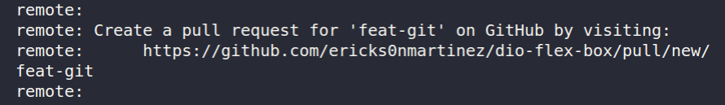
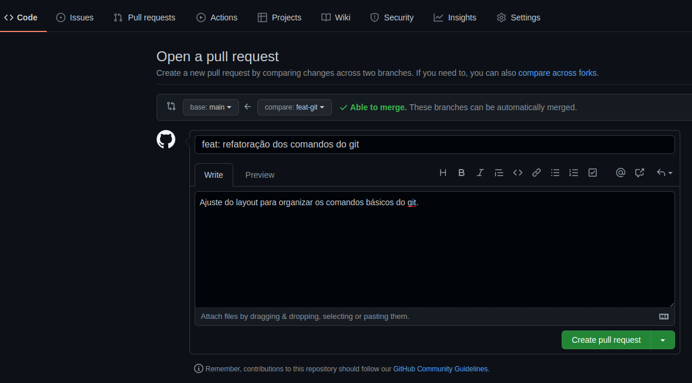
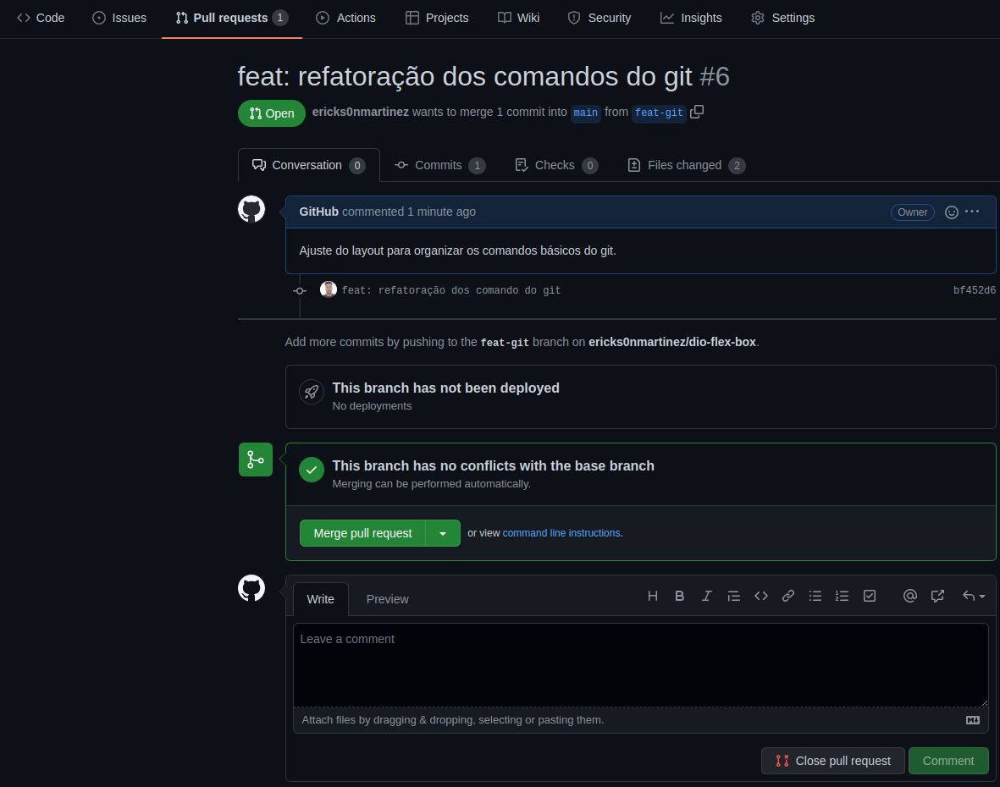

Configuração do projeto na maquina local
- Criar um repositório no Github
- Clonar o prjeto no PC
git clone "nome_do_repositório_criado" - Configuração usuario
git config user.name "seu_nome" - Configuração email
git config user.email "nome@email.com"
Comandos básicos
Os proximos comando basicos 'checkout -b'², 'adicionar'⁴, 'commit'⁵, 'push'⁶, 'pull'⁸.
- Verificar ramo atual
git branch - Criando um novo ramo e entrar
git checkout -b "nomebranch" -
Momento para adicionar arquivos e codigos do seu projeto referente a demanda atual da tarefa.
- Adicionar alterações para comitar
git add . - Commitar codigo
git commit -m"feat: resumo da SUA atividade" - Enviar codigo para o git
git push origin "nomebranch" -
Abrir a PR para realizar o merge da branch com seu novo código com a main.
-
Após o comando "git push", aparece o link no terminal
 -
Direciona para site do Github comparando diferença do codigo com a branch principal
 -
Unir o código com a branch principal no botão "Merge pull request"

-
- retornar para a main
git checkout main - atualizar branch main
git pull origin main